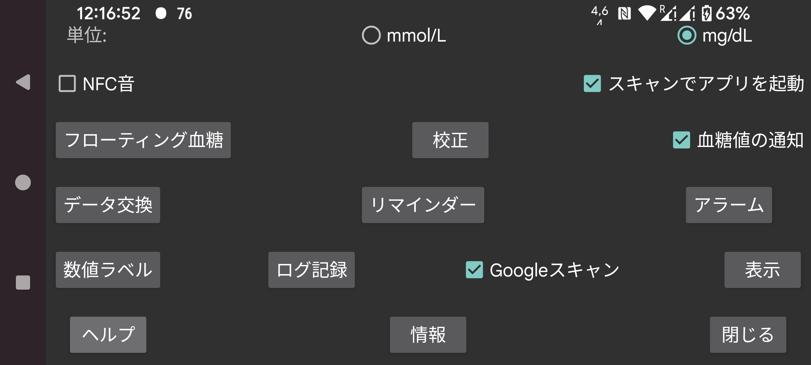

ar be de es fr hi it ja ko nl pl pt ru tr uk uz zh en
血糖値を mmol/L で表示するか mg/dL で表示するかを選択します。
スキャン中にバイブレーションに加えて音を鳴らします。
チェックすると、このアプリが表示されていなくても、NFC でセンサーをスキャンしたときにこのアプリが起動されます。複数のアプリにこの設定がある場合、Android はどのアプリを使用するかを選択する選択画面を表示します。なぜか 1 つを選んでも動作せず、次回も選ばれるよう選択することもできません。そのため、この場合はフォアグラウンドにアプリがない状態ではスキャンできません。このアプリでこれをオフにすると、少なくとも 1 つのアプリがこの方法で有効化できるようになります。
root アクセスがある場合は、Abbott の Librelink アプリの NFC 起動を無効にすることもできます(Libre 3 では動作しません):
adb shell または termux で root になり、次のように入力します:
pm disable com.freestylelibre.app.nl/com.librelink.app.ui.common.NFCScanActivity
Librelink 2.7.1 以前では次のように入力する必要がありました:
pm disable com.freestylelibre.app.nl/com.librelink.app.ui.common.ScanSensorActivity
com.freestylelibre.app.nl はオランダ版の Librelink で、お使いのバージョンに置き換える必要があります。次のように入力すると(root がなくても)その名前を確認できます:
pm list package freestylelibre
その後、Librelink がフォアグラウンドにある場合はスキャンに使えますが、それ以外では起動されません。Librelink 2.5.2 以降は root を検出すると自分自身をクラッシュさせます。ただし Magisk では、Magisk の名前を変更し、個別のアプリを denylist (Magisk 24.3) または Magiskhide (Magisk 23.0) に追加することで簡単に root を隠せます。Juggluco も denylist に追加する必要があります。米国版の FreeStyle Libre 2 センサーを使用しない場合は、root チェックのない古いバージョンの Librelink を使うこともできます。
root なしでも、adb shell でアプリ全体を無効にすることもできます:
pm disable-user --user 0 com.freestylelibre.app.nl
Abbott カスタマーサービスに電話する前に、次のコマンドで再有効化できます:
pm enable com.freestylelibre.app.nl
(以前は「Android ステータスバーの血糖値」と呼ばれていました)。設定すると、Bluetooth 経由でストリーミングされる血糖値が通知と Android ステータスバーに静かに表示されます。オフにすると、数値の代わりに点が表示され、通知は「センサーに接続するには」または「データを交換するには」というだけの内容になります。バックグラウンドで動作し続けるアプリは Android によりこのような可視通知を持つことが義務付けられています(そうでないと Android に簡単に停止されます)。「Bluetooth 経由のセンサー」がオフでミラー接続もない場合のみ、Juggluco は通知をオフにします。
一部のスマートフォンでは、Android の通知設定を変更した後にのみ Android ステータスバーに血糖値が表示されます。例えば Realme GT 5G では、アプリリスト → Juggluco → 通知の管理 に移動し、glucoseNotification をタブして「サイレントに設定」をオフにする必要があります。「ステータスバーに表示」がオンになります。
左中メニューで 通知 を選択することで Android 通知を取得することもできます。その場合、設定されていれば通知は一部のスマートウォッチに送信されます。Garmin ウォッチでは動作しますが、それ以外で動作するかは分かりません。アラームも通知を生成します。
これをオンにすると、現在の血糖値の小さな画像がどのアプリがフォアグラウンドにあるかに関係なく常に画面に表示されます。初めてオンにすると、Juggluco に 他のアプリの上に表示する権限を付与する必要があるアプリ一覧に誘導されます。
低血糖アラームと高血糖アラーム、信号喪失アラーム、値が利用可能になった通知を設定します。
記録に使うラベルを指定します。インスリン用量、炭水化物摂取、フットボールをした時間など、記録設定に使用するラベルを決定する画面に移動します。Garmin ウォッチアプリ Kerfstok も使用している場合、これらのラベルはウォッチアプリにも送信されます。
Juggluco から他のアプリやサーバーへデータを送信するさまざまな方法。(ウォッチへのデータ送信は左メニュー → ウォッチへ。)
指定された時間内に一定量の食事や薬を入力しなかった場合にアラームを発生させるよう指定します。
Sibionics センサーパッケージや Dexcom G7/ONE+ アプリケーター上のデータマトリクス、左中メニュー → ミラーの QR コードを Google コードスキャナーでスキャンします。チェックされていない場合、zXing が使用されます。ほとんどの端末で Google スキャンの方が良く動作しますが、動作しないこともあります。エラーで失敗した場合は常に zXing が使われますが、エラーを返さずに Google スキャンが動作しないこともあります。
目標範囲から言語まで、データの表示方法に関するあらゆる設定。